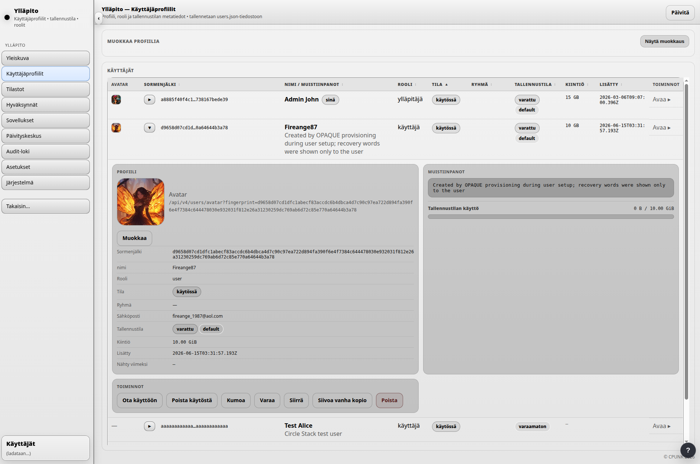
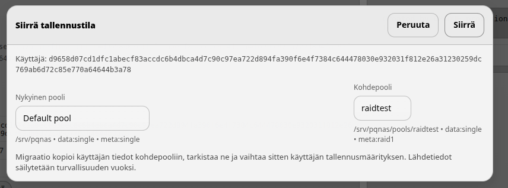
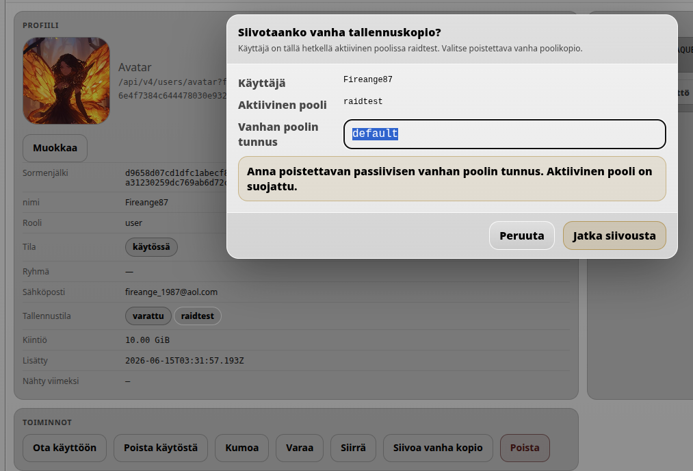

Käyttäjien hallinta
Käyttäjien ylläpitotoimet hoidetaan kohdasta Ylläpito → Käyttäjäprofiilit. Hyväksyntä ja käyttöönotto käsitellään käyttäjien luontivaiheessa; tämä sivu keskittyy olemassa olevien käyttäjien hallintaan.
Käyttäjien hallinnan yleiskuva
Kohdassa Ylläpito → Käyttäjäprofiilit ylläpitäjä voi aktivoida käyttäjiä, poistaa käyttäjiä käytöstä, kumota käyttäjän pääsyn kokonaan, asettaa tallennustilan kiintiöitä ja hallita käyttäjän tallennuspoolia.

- Aktivoi / ota käyttöön sallii käyttäjän kirjautumisen, jos valittu kirjautumistapa on muuten kunnossa.
- Poista käytöstä estää kirjautumisen poistamatta käyttäjämerkintää.
- Kumoa / revoke estää pääsyn kokonaan ja säilyttää tilistä ylläpidollisen merkinnän.
- Kiintiö määrittää käyttäjälle varatun tallennustilan määrän.
Tallennuspoolien välinen siirto
Käyttäjä voidaan siirtää tallennuspoolista toiseen. Käytä Siirrä-toimintoa, kun haluat valita käyttäjälle uuden kohdepoolin.

Kun käyttäjä siirretään uuteen kohdepooliin, vanhan poolin kopio säilytetään tarkoituksella turvallisuussyistä. Sen voi myöhemmin poistaa Siivoa vanha kopio -toiminnolla.

Järjestely, muokkaus ja avatarit
Käyttäjäluetteloa voidaan järjestellä yläpalkin toiminnoilla ja klikkaamalla taulukon otsikoita. Esimerkiksi Kiintiö-otsikon klikkaaminen järjestää käyttäjät tallennustilan kiintiön perusteella.
Ylläpitäjä voi myös asettaa käyttäjälle avatar-kuvan. Avaa käyttäjän kortti ja klikkaa Muokkaa. Käyttäjän tiedot tulevat näkyviin Muokkaa profiilia -kohtaan. Muutosten jälkeen muista painaa Lisää / Päivitä, jotta muutokset tallentuvat.